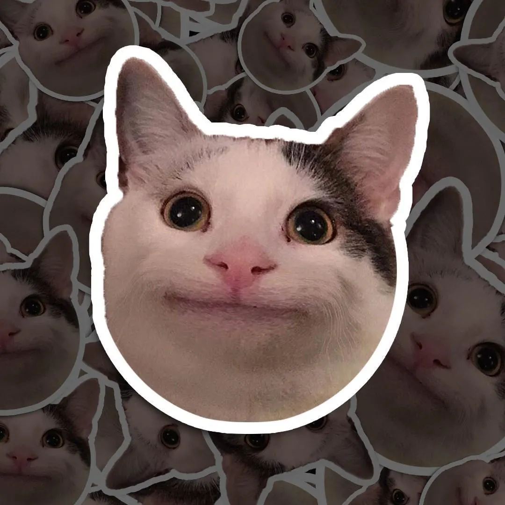
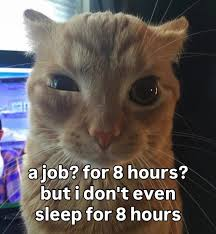
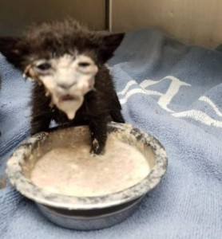

El gato digital (Internet)

El gato ya no habita templos ni casas:
habita pantallas.
Y desde ahí, nunca se va.

Millones lo miran y comparten.
No necesita de palabras:
su gesto ya es universal.

No es casualidad.
El algoritmo aprendió rápido:
los humanos no pueden dejar de mirar gatos.
volver a inicio
Continuar el recorrido